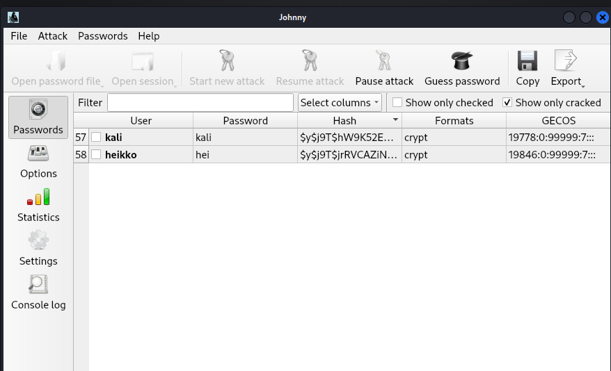
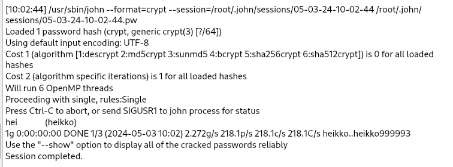
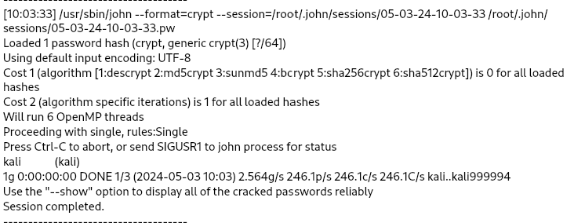
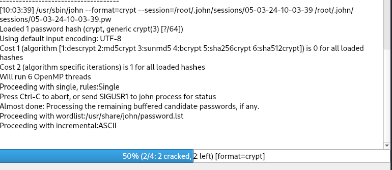
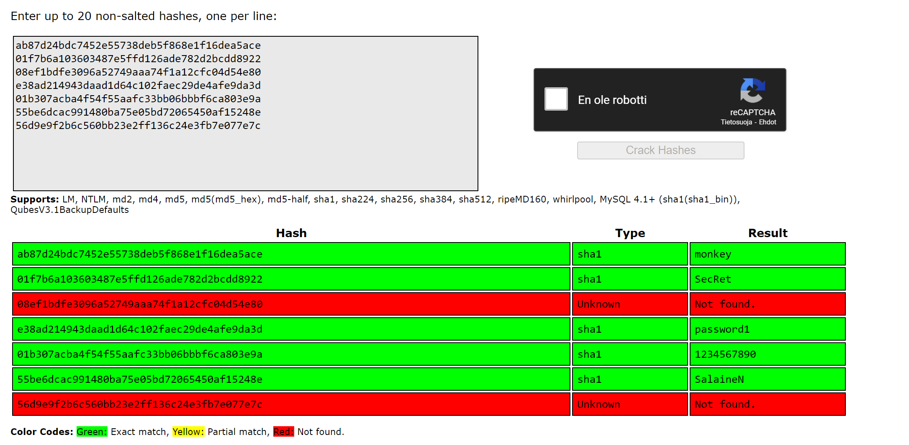
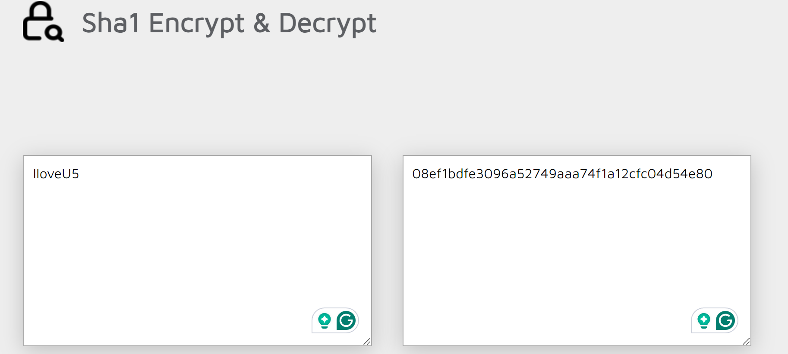
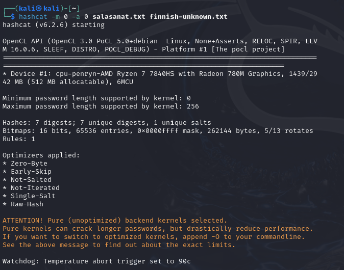
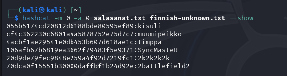
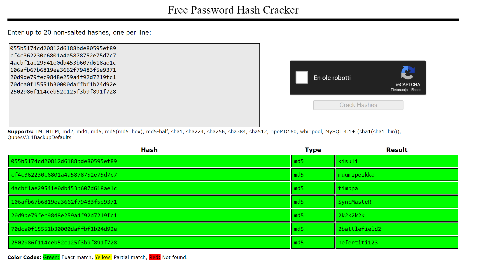

Tehtävä A: Salasanojen murtaminen raakaa laskentaa käyttäen
Yritin ensin kokeilla online Kali Linuxia, mutta se ei toiminut olleenkaan. Päädyin sitten asentamaan Kali Linuxin virtuaaliboxiin ja asensin myös johnny graafisen näkymän. Käytin John The Ripper ja Johnnya. Loin kolme käyttäjää nimillä heikko, keski ja vahva. Alla olevassa kuvakaappauksessa näkyy kahden salasanan murto. Toinen oli Kali Linuxin oma aloitussalasana ja toinen heikko. .
   Yhteenvetona sanoisin, että kaksi ekaa salasanaa sai helposti rikottua, mutta keski ja vahvaa ei sitten lainkaan. Kone jurskutti siinä määrin, että ajatellin sen lähtevän jo lentoon. Alkoi tuntumaan jo siltä, että homma ei etene ja kone kärsii, joten lopetin homman kesken. Keski salasana oli Heik5 ja vahva salasana oli Happ4!
Tehtävä B: Salasanojen murtaminen sanakirjahyökkäysten ja sateenkaaritaulujen avulla
1. Käytin sateenkaaritauluja yrittäessä murtaa SHA-1 muodossa olevia salasanoja. Tässä kuvakaappauksia tuloksista.
SHA-1 salasanat: ab87d24bdc7452e55738deb5f868e1f16dea5ace 01f7b6a103603487e5ffd126ade782d2bcdd8922 ...
2. Kaksi salasanaa ei murtunut ja sitten kokeilin netistä löytyvää seuraavaa ohjelmaa, josta sainkin yhden salasanan murrettua. Kuva alla.
3. Käytin sanakirjahyökkäyksiä ja myös kokeilin sateenkaaritauluja salasanojen nopeampaan murtamiseen. Yritin selvittää MD5 muodossa olevat salasanat ja tässä kuvakaappauksia tuloksista.
MD5 salasanat: 055b5174cd20812d6188bde80595ef89 cf4c362230c6801a4a5878752e75d7c7 ...
Latasin tiedoston finnish-unknown.txt koneelle ja loin salasanat.txt tiedoston. Ja aloitin salasanojen murtamisen salasanasanakirjan avulla.
Sanakirjan avulla sain kaikki paitsi yhden MD5 salasanan murrettua.
4. Sateenkaaritaulun avulla sain kaikki MD5 salasanat murrettua.
